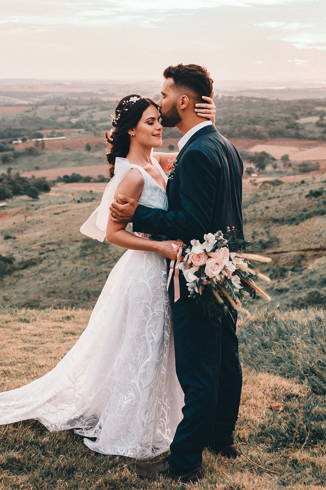
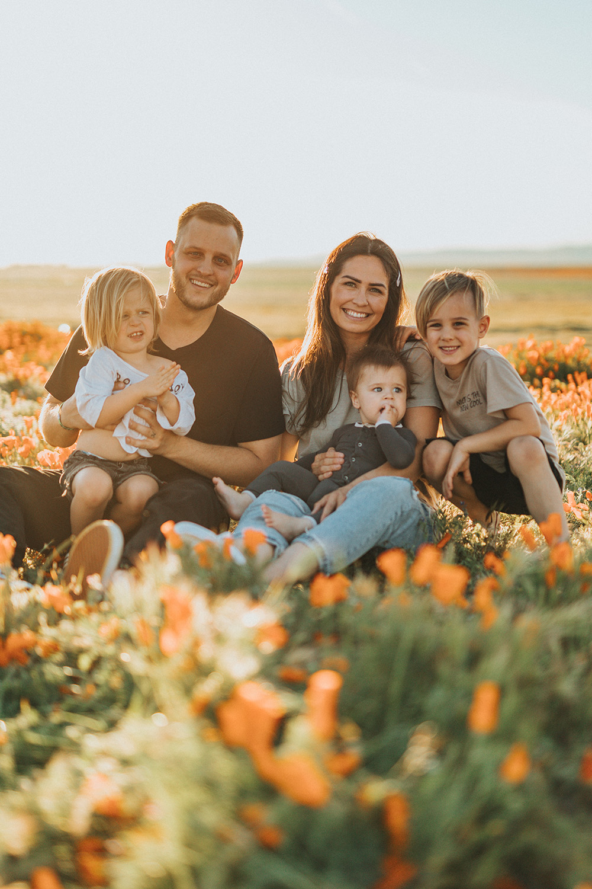

Stories



"Photography is the art of making memories tangible" ~Destin Sparks
My name is Isabella Smith and I am an award winning photographer over 10 years of experience in the industry and wife and mother to my wonderful husband and children.I love meeting new people and helping make their day extra special. I take an artistic and colourful approach to photography, using my artistic skills to set up and enhance scenes.